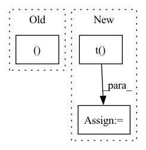

Pattern ID :36390

Before Change
@classmethod
def backward(self, ctx, dy):
x, = ctx.saved_tensors
zeros = torch.zeros_like(x)
return torch.where(x > 0, dy * x * 2, zeros)
After Change
zeros = torch.zeros_like(dy)
dy = torch.where(c > 0, dy * c * 2, zeros)
db = torch.where(c > 0, dy, zeros)
dx = dy @ w.t()
dw = x.transpose(-1, -2) @ dy
return dx, dw, db
triton_relu_squared = _relu_squared.apply
In pattern: SUPERPATTERN
Frequency: 5
Non-data size: 3
Instances
Fragment ID: 102983075
Project Name: lucidrains/triton-transformer
Commit Name: 72efae6cb8b3c62b501dd5bcf1ab8cfbf684e0cb
Time: 2021-09-21
Author: lucidrains@gmail.com
File Name: triton_transformer/triton_transformer.py
M Class Name: _relu_squared
N Class Name: _relu_squared
M Method Name: backward(3)
N Method Name: backward(3)
M Parent Class: autograd.Function
N Parent Class: autograd.Function
M File Name: triton_transformer/triton_transformer.py
N File Name: triton_transformer/triton_transformer.py
M Start Line: 94
M End Line: 96
N Start Line: 97
N End Line: 103
'>
Before Change
//todo 序列标注的数据处理
if self.sequence_model:
(data, data_seq_length), label = batch_group
seq_len = data.size(1)
batch_size = data.size(0)
mask = generate_mask(data_seq_length, seq_len, batch_size)
After Change
if self.sequence_model:
tmp = batch_group.TEXT
label = batch_group.LABEL.t()
data = tmp[0].t()
data_seq_length = tmp[1]
seq_len = data.size(1)
batch_size = data.size(0)
'>
Fragment ID: 102983091
Project Name: waterzxj/unf
Commit Name: fa5726012c5fff2c6c453adb8c65adf03dbb1855
Time: 2020-02-14
Author: 1486459973@qq.com
File Name: UNF/training/learner.py
M Class Name: Trainer
N Class Name: Trainer
M Method Name: batch_loss(2)
N Method Name: batch_loss(2)
M Parent Class: object
N Parent Class: object
M File Name: UNF/training/learner.py
N File Name: UNF/training/learner.py
M Start Line: 321
M End Line: 321
N Start Line: 321
N End Line: 344
'>
Before Change
def get_pseudo_labels(self, normalized_features):
self.index.reset()
indices, _ = get_knn(
self.feat_memory,
normalized_features,
self.k,
After Change
return pseudo_labels, mean_logits
def get_pseudo_labels(self, normalized_features, idx):
dis = torch.mm(normalized_features, self.feat_memory.t())
// set self-comparisons to min similarity
for di in range(dis.size(0)):
dis[di, idx[di]] = torch.min(dis)
_, indices = torch.topk(dis, k=self.k, dim=1)
logits = torch.mean(self.pred_memory[indices], dim=1)
pseudo_labels = torch.argmax(logits, dim=1)
return pseudo_labels, logits
'>
Fragment ID: 102983088
Project Name: kevinmusgrave/pytorch-adapt
Commit Name: 41b3840899f3f69b450e38b92fc8214ea4e6ec38
Time: 2021-09-01
Author: tkm45@cornell.edu
File Name: src/pytorch_adapt/layers/neighborhood_aggregation.py
M Class Name: NeighborhoodAggregation
N Class Name: NeighborhoodAggregation
M Method Name: get_pseudo_labels(3)
N Method Name: get_pseudo_labels(2)
M Parent Class: torch.nn.Module
N Parent Class: torch.nn.Module
M File Name: src/pytorch_adapt/layers/neighborhood_aggregation.py
N File Name: src/pytorch_adapt/layers/neighborhood_aggregation.py
M Start Line: 36
M End Line: 43
N Start Line: 32
N End Line: 37
'>
Before Change
batch_size = data.size(0)
mask = generate_mask(data_seq_length, seq_len, batch_size)
else:
data, label = batch_group
data = data.t()
mask = None //mask计算todo
After Change
tmp = batch_group.TEXT
label = batch_group.LABEL
if len(label.size()) > 1:
label = label.t()
if len(tmp) == 2:
data = tmp[0].t()
data_seq_length = tmp[1]
'>
Fragment ID: 102983104
Project Name: waterzxj/unf
Commit Name: 09694a5d28252c5e2327c1d695b8e7de6a965605
Time: 2020-02-22
Author: 1486459973@qq.com
File Name: UNF/training/learner.py
M Class Name: Trainer
N Class Name: Trainer
M Method Name: batch_loss(2)
N Method Name: batch_loss(2)
M Parent Class: object
N Parent Class: object
M File Name: UNF/training/learner.py
N File Name: UNF/training/learner.py
M Start Line: 340
M End Line: 373
N Start Line: 346
N End Line: 385
'>
Before Change
g_nat = g_nat[:, :-1]
// weight.grad.data = g_nat
return g_nat.contiguous(), gb.contiguous()
def _precond_intra_sua(self, group: dict[str, Union[LayerType, Iterable[torch.Tensor]]], weight_grad: torch.Tensor, bias_grad: Optional[torch.Tensor],
) -> tuple[torch.Tensor, Optional[torch.Tensor]]:
Preconditioning for KFAC SUA.
After Change
g_kfe = self.to_kfe_sua(g, state.kfe_x, state.kfe_gy) // (out, in + 1, kh, kw)
m2 = self.alpha * state.m2 + (1 - self.alpha) * N * (g_kfe.square()) // (out, in + 1, kh, kw)
g_nat_kfe = g_kfe / (m2 + self.eps) // (out, in + 1, kh, kw)
g = self.to_kfe_sua(g_nat_kfe, state.kfe_x.t(), state.kfe_gy.t()) // (out, in + 1, kh, kw)
if gb is not None:
gb = g[:, -1, s[2] // 2, s[3] // 2].contiguous() // (out)
g = g[:, :-1] // (out, in, kh, kw)
g = g.contiguous()
return g, gb
def _precond_intra_sua(self, mod: nn.Conv2d, weight_grad: torch.Tensor,
'>
Fragment ID: 102983081
Project Name: ain-soph/trojanzoo
Commit Name: 6c7dbc51bfacdfb1fbe957a3544f7f6d1ae55bb4
Time: 2021-09-24
Author: ain-soph@live.com
File Name: trojanzoo/utils/fim/ekfac.py
M Class Name: EKFAC
N Class Name: EKFAC
M Method Name: _precond_sua_ra(4)
N Method Name: _precond_sua_ra(4)
M Parent Class: BaseKFAC
N Parent Class: Optimizer
M File Name: trojanzoo/utils/fim/ekfac.py
N File Name: trojanzoo/utils/fim/ekfac.py
M Start Line: 167
M End Line: 196
N Start Line: 86
N End Line: 106